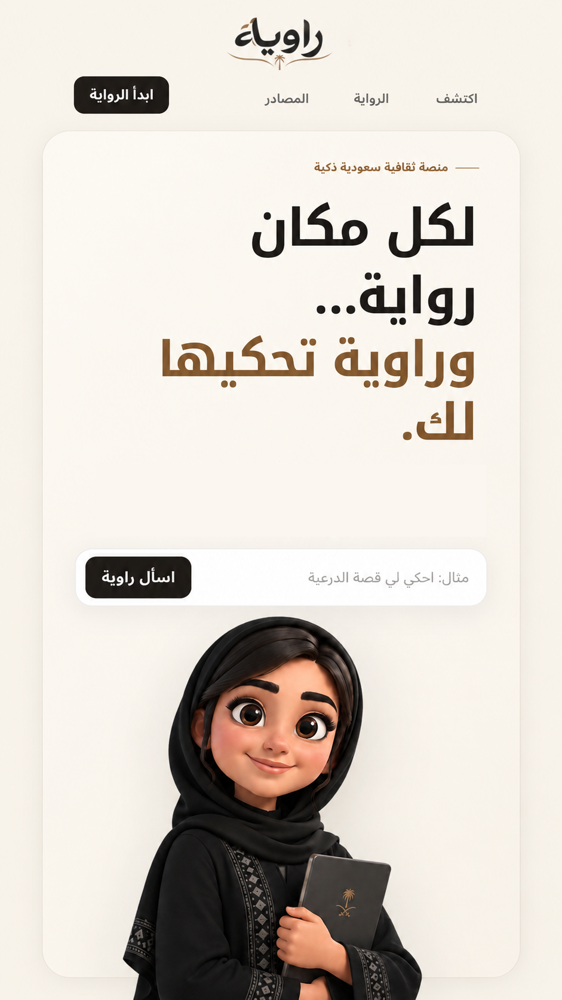
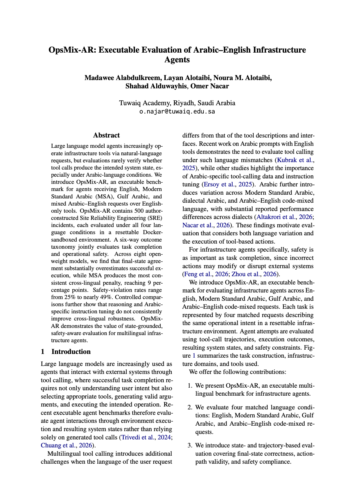
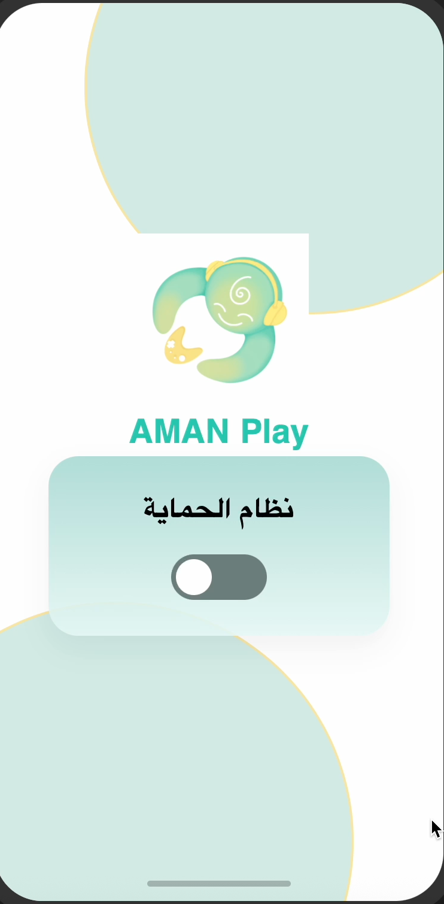

AI & NLP Engineer — LLM Systems, Arabic NLP
IT graduate focused on building practical intelligent systems across Arabic NLP, large language models, agentic AI, and scalable AI infrastructure. Based in Riyadh, Saudi Arabia.
I build AI systems that hold up under real infrastructure, real language, and real users — not just a benchmark.
I'm a recent IT graduate based in Riyadh, working at the intersection of Arabic NLP, large language models, and the infrastructure that lets them run reliably in production. My work ranges from source-grounded Arabic storytelling systems to research on how LLM agents behave when a task is described in Gulf Arabic instead of English.
I'm most interested in problems where a model's output has to be correct, explainable, and fast — agentic tool use, retrieval that stays honest to its sources, and the GPU-level engineering that makes inference affordable at scale.
Three systems spanning cultural NLP, agent evaluation research, and applied deep learning for digital safety.
Arabic NLP & Saudi cultural heritage storytelling
Rawiyah is an intelligent cultural platform that preserves and presents Saudi heritage and national identity through interactive Arabic storytelling — covering historical figures, places, events, and traditional expressions. It was deliberately designed to feel like a guided narrative experience, not a chatbot.

Arabic–English LLM agent evaluation in executable infrastructure environments
A research project evaluating how robust LLM agents are when executing real infrastructure and sysadmin tasks across English, Modern Standard Arabic, Gulf Arabic, and mixed Arabic–English input — using a benchmark of 500 executable tasks against 8 models.

Deep learning & NLP for digital safety
A digital safety project detecting harmful and toxic content using Arabic NLP and deep learning, combining AraBERT with CNN and LSTM architectures for content moderation.

Hands-on training in AI infrastructure and applied systems engineering.
Contributed to applied AI and infrastructure work during a co-op placement, gaining exposure to how AI systems are deployed and maintained in an enterprise setting.
Hands-on training in NVIDIA GPU architecture and the full stack of modern LLM training and serving — from distributed training strategies to production inference. This training directly informed the design of the OpsMix-Ar research project.
Across modeling, infrastructure, and applied engineering.
I'm interested in opportunities across AI, NLP, LLM systems, AI infrastructure, and applied machine learning — in Saudi Arabia and internationally.
Download CV